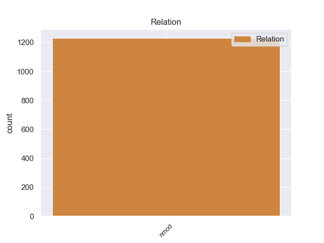
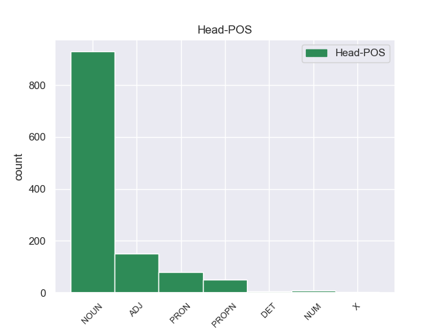
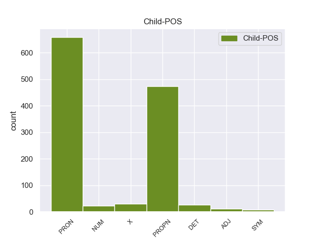

Distribution of features within this leaf



Agreement Rules sorted by frequency.
- When the dependent token is the nominal modifier(nmod) of the head token, and the head token is NOUN and the dependent token is PROPN.
1 Su _ _ _ _ 0 _ _ _
2 última _ _ _ _ 0 _ _ _
3 etapa _ _ _ _ 0 _ _ _
4 como _ _ _ _ 0 _ _ _
5 realizador _ _ _ _ 0 _ _ _
6 se _ _ _ _ 0 _ _ _
7 define _ _ _ _ 0 _ _ _
8 por _ _ _ _ 0 _ _ _
9 otro _ _ _ _ 0 _ _ _
10 reemplazo _ _ _ _ 0 _ _ _
11 en _ _ _ _ 0 _ _ _
12 pleno _ _ _ _ 0 _ _ _
13 rodaje _ _ _ _ 0 _ _ _
14 , _ _ _ _ 0 _ _ _
15 en _ _ _ _ 0 _ _ _
16 este _ _ _ _ 0 _ _ _
17 caso caso NOUN _ Gender=Masc|Number=Sing 0 _ _ _
18 de _ _ _ _ 0 _ _ _
19 " _ _ _ _ 0 _ _ _
20 El _ _ _ _ 0 _ _ _
21 último _ _ _ _ 0 _ _ _
22 adiós adiós PROPN _ Gender=Masc|Number=Sing 17 nmod _ _
23 de _ _ _ _ 0 _ _ _
24 la _ _ _ _ 0 _ _ _
25 sra _ _ _ _ 0 _ _ _
26 . _ _ _ _ 0 _ _ _
1 El _ _ _ _ 0 _ _ _
2 City _ _ _ _ 0 _ _ _
3 quiere _ _ _ _ 0 _ _ _
4 a _ _ _ _ 0 _ _ _
5 ambos _ _ _ _ 0 _ _ _
6 , _ _ _ _ 0 _ _ _
7 sobre _ _ _ _ 0 _ _ _
8 todo todo PRON _ Gender=Masc|Number=Sing|PronType=Tot 11 nmod _ _
9 a _ _ _ _ 0 _ _ _
10 el _ _ _ _ 0 _ _ _
11 argentino argentino NOUN _ Gender=Masc|Number=Sing 0 _ _ _
12 que _ _ _ _ 0 _ _ _
13 juega _ _ _ _ 0 _ _ _
14 de _ _ _ _ 0 _ _ _
15 mediocentro _ _ _ _ 0 _ _ _
16 . _ _ _ _ 0 _ _ _
1 El _ _ _ _ 0 _ _ _
2 estudio _ _ _ _ 0 _ _ _
3 , _ _ _ _ 0 _ _ _
4 publicado _ _ _ _ 0 _ _ _
5 en _ _ _ _ 0 _ _ _
6 la _ _ _ _ 0 _ _ _
7 revista _ _ _ _ 0 _ _ _
8 Environmental _ _ _ _ 0 _ _ _
9 Health _ _ _ _ 0 _ _ _
10 Perspectives _ _ _ _ 0 _ _ _
11 , _ _ _ _ 0 _ _ _
12 precisó _ _ _ _ 0 _ _ _
13 que _ _ _ _ 0 _ _ _
14 el _ _ _ _ 0 _ _ _
15 herbicida _ _ _ _ 0 _ _ _
16 mata _ _ _ _ 0 _ _ _
17 una _ _ _ _ 0 _ _ _
18 gran _ _ _ _ 0 _ _ _
19 proporción _ _ _ _ 0 _ _ _
20 de _ _ _ _ 0 _ _ _
21 esas _ _ _ _ 0 _ _ _
22 células _ _ _ _ 0 _ _ _
23 después _ _ _ _ 0 _ _ _
24 de _ _ _ _ 0 _ _ _
25 sólo _ _ _ _ 0 _ _ _
26 dieciocho _ _ _ _ 0 _ _ _
27 horas _ _ _ _ 0 _ _ _
28 de _ _ _ _ 0 _ _ _
29 exposición _ _ _ _ 0 _ _ _
30 a _ _ _ _ 0 _ _ _
31 concentraciones _ _ _ _ 0 _ _ _
32 menores menor ADJ _ Degree=Cmp|Number=Plur 0 _ _ _
33 que _ _ _ _ 0 _ _ _
34 las él PRON _ Case=Acc|Gender=Fem|Number=Plur|Person=3|PrepCase=Npr|PronType=Prs 32 nmod _ _
35 utilizadas _ _ _ _ 0 _ _ _
36 en _ _ _ _ 0 _ _ _
37 el _ _ _ _ 0 _ _ _
38 uso _ _ _ _ 0 _ _ _
39 agrícola _ _ _ _ 0 _ _ _
40 . _ _ _ _ 0 _ _ _
1 Explicó _ _ _ _ 0 _ _ _
2 que _ _ _ _ 0 _ _ _
3 la _ _ _ _ 0 _ _ _
4 mayoría _ _ _ _ 0 _ _ _
5 de _ _ _ _ 0 _ _ _
6 estas _ _ _ _ 0 _ _ _
7 personas _ _ _ _ 0 _ _ _
8 murieron _ _ _ _ 0 _ _ _
9 soterradas _ _ _ _ 0 _ _ _
10 en _ _ _ _ 0 _ _ _
11 sus _ _ _ _ 0 _ _ _
12 viviendas _ _ _ _ 0 _ _ _
13 y _ _ _ _ 0 _ _ _
14 muchas mucho PRON _ Gender=Fem|Number=Plur|NumType=Card|PronType=Ind 0 _ _ _
15 de _ _ _ _ 0 _ _ _
16 ellas él PRON _ Case=Acc,Nom|Gender=Fem|Number=Plur|Person=3|PronType=Prs 14 nmod _ _
17 por _ _ _ _ 0 _ _ _
18 resistir _ _ _ _ 0 _ _ _
19 se _ _ _ _ 0 _ _ _
20 a _ _ _ _ 0 _ _ _
21 desalojar _ _ _ _ 0 _ _ _
22 sus _ _ _ _ 0 _ _ _
23 casas _ _ _ _ 0 _ _ _
24 como _ _ _ _ 0 _ _ _
25 se _ _ _ _ 0 _ _ _
26 les _ _ _ _ 0 _ _ _
27 pidió _ _ _ _ 0 _ _ _
28 con _ _ _ _ 0 _ _ _
29 anticipación _ _ _ _ 0 _ _ _
30 . _ _ _ _ 0 _ _ _
1 Su _ _ _ _ 0 _ _ _
2 última _ _ _ _ 0 _ _ _
3 etapa _ _ _ _ 0 _ _ _
4 como _ _ _ _ 0 _ _ _
5 realizador _ _ _ _ 0 _ _ _
6 se _ _ _ _ 0 _ _ _
7 define _ _ _ _ 0 _ _ _
8 por _ _ _ _ 0 _ _ _
9 otro _ _ _ _ 0 _ _ _
10 reemplazo _ _ _ _ 0 _ _ _
11 en _ _ _ _ 0 _ _ _
12 pleno _ _ _ _ 0 _ _ _
13 rodaje _ _ _ _ 0 _ _ _
14 , _ _ _ _ 0 _ _ _
15 en _ _ _ _ 0 _ _ _
16 este _ _ _ _ 0 _ _ _
17 caso _ _ _ _ 0 _ _ _
18 de _ _ _ _ 0 _ _ _
19 " _ _ _ _ 0 _ _ _
20 El _ _ _ _ 0 _ _ _
21 último _ _ _ _ 0 _ _ _
22 adiós adiós PROPN _ Gender=Masc|Number=Sing 0 _ _ _
23 de _ _ _ _ 0 _ _ _
24 la _ _ _ _ 0 _ _ _
25 sra sra PROPN _ Gender=Fem|Number=Sing 22 nmod _ SpaceAfter=No
26 . _ _ _ _ 0 _ _ _
1 Terminó _ _ _ _ 0 _ _ _
2 como _ _ _ _ 0 _ _ _
3 subcampeón _ _ _ _ 0 _ _ _
4 en _ _ _ _ 0 _ _ _
5 la _ _ _ _ 0 _ _ _
6 votación votación NOUN _ Gender=Fem|Number=Sing 0 _ _ _
7 de _ _ _ _ 0 _ _ _
8 el _ _ _ _ 0 _ _ _
9 rookie rookie X _ Gender=Masc|Number=Sing 6 nmod _ _
10 de _ _ _ _ 0 _ _ _
11 el _ _ _ _ 0 _ _ _
12 año _ _ _ _ 0 _ _ _
13 de _ _ _ _ 0 _ _ _
14 1985 _ _ _ _ 0 _ _ _
15 tras _ _ _ _ 0 _ _ _
16 Michael _ _ _ _ 0 _ _ _
17 Jordan _ _ _ _ 0 _ _ _
18 . _ _ _ _ 0 _ _ _
1 La _ _ _ _ 0 _ _ _
2 letra _ _ _ _ 0 _ _ _
3 explica _ _ _ _ 0 _ _ _
4 , _ _ _ _ 0 _ _ _
5 irónicamente _ _ _ _ 0 _ _ _
6 , _ _ _ _ 0 _ _ _
7 la _ _ _ _ 0 _ _ _
8 historia historia NOUN _ Gender=Fem|Number=Sing 0 _ _ _
9 amorosa _ _ _ _ 0 _ _ _
10 entre _ _ _ _ 0 _ _ _
11 el el DET _ Definite=Def|Gender=Masc|Number=Sing|PronType=Art 8 nmod _ _
12 más _ _ _ _ 0 _ _ _
13 pequeño _ _ _ _ 0 _ _ _
14 de _ _ _ _ 0 _ _ _
15 los _ _ _ _ 0 _ _ _
16 tamborileros _ _ _ _ 0 _ _ _
17 y _ _ _ _ 0 _ _ _
18 la _ _ _ _ 0 _ _ _
19 hija _ _ _ _ 0 _ _ _
20 de _ _ _ _ 0 _ _ _
21 el _ _ _ _ 0 _ _ _
22 rey _ _ _ _ 0 _ _ _
23 . _ _ _ _ 0 _ _ _
1 Ese _ _ _ _ 0 _ _ _
2 año _ _ _ _ 0 _ _ _
3 su _ _ _ _ 0 _ _ _
4 equipo _ _ _ _ 0 _ _ _
5 se _ _ _ _ 0 _ _ _
6 proclamó _ _ _ _ 0 _ _ _
7 campeón _ _ _ _ 0 _ _ _
8 de _ _ _ _ 0 _ _ _
9 la _ _ _ _ 0 _ _ _
10 Copa _ _ _ _ 0 _ _ _
11 de _ _ _ _ 0 _ _ _
12 la _ _ _ _ 0 _ _ _
13 UEFA _ _ _ _ 0 _ _ _
14 a _ _ _ _ 0 _ _ _
15 el _ _ _ _ 0 _ _ _
16 derrotar _ _ _ _ 0 _ _ _
17 en _ _ _ _ 0 _ _ _
18 la _ _ _ _ 0 _ _ _
19 final _ _ _ _ 0 _ _ _
20 a _ _ _ _ 0 _ _ _
21 el _ _ _ _ 0 _ _ _
22 Borussia _ _ _ _ 0 _ _ _
23 de _ _ _ _ 0 _ _ _
24 Dortmund _ _ _ _ 0 _ _ _
25 por _ _ _ _ 0 _ _ _
26 tres _ _ _ _ 0 _ _ _
27 goles gol NOUN _ Gender=Masc|Number=Plur 0 _ _ _
28 a _ _ _ _ 0 _ _ _
29 dos dos NUM _ Number=Plur|NumType=Card 27 nmod _ SpaceAfter=No
30 . _ _ _ _ 0 _ _ _
1 Creado _ _ _ _ 0 _ _ _
2 por _ _ _ _ 0 _ _ _
3 iniciativa _ _ _ _ 0 _ _ _
4 de _ _ _ _ 0 _ _ _
5 creado _ _ _ _ 0 _ _ _
6 por _ _ _ _ 0 _ _ _
7 Mariano _ _ _ _ 0 _ _ _
8 García _ _ _ _ 0 _ _ _
9 Morales _ _ _ _ 0 _ _ _
10 y _ _ _ _ 0 _ _ _
11 aprobado _ _ _ _ 0 _ _ _
12 por _ _ _ _ 0 _ _ _
13 Decreto _ _ _ _ 0 _ _ _
14 de _ _ _ _ 0 _ _ _
15 15 _ _ _ _ 0 _ _ _
16 de _ _ _ _ 0 _ _ _
17 junio _ _ _ _ 0 _ _ _
18 de _ _ _ _ 0 _ _ _
19 1942 _ _ _ _ 0 _ _ _
20 como _ _ _ _ 0 _ _ _
21 organismo _ _ _ _ 0 _ _ _
22 autónomo _ _ _ _ 0 _ _ _
23 , _ _ _ _ 0 _ _ _
24 denominado _ _ _ _ 0 _ _ _
25 Centro _ _ _ _ 0 _ _ _
26 Experimental _ _ _ _ 0 _ _ _
27 de _ _ _ _ 0 _ _ _
28 Arqultectura _ _ _ _ 0 _ _ _
29 , _ _ _ _ 0 _ _ _
30 dependiente dependiente ADJ _ Number=Sing 0 _ _ _
31 de _ _ _ _ 0 _ _ _
32 el _ _ _ _ 0 _ _ _
33 Ministerio ministerio PROPN _ Gender=Masc|Number=Sing 30 nmod _ _
34 de _ _ _ _ 0 _ _ _
35 la _ _ _ _ 0 _ _ _
36 Gobernación _ _ _ _ 0 _ _ _
37 de _ _ _ _ 0 _ _ _
38 España _ _ _ _ 0 _ _ _
39 , _ _ _ _ 0 _ _ _
40 siendo _ _ _ _ 0 _ _ _
41 ministro _ _ _ _ 0 _ _ _
42 Valentín _ _ _ _ 0 _ _ _
43 Galarza _ _ _ _ 0 _ _ _
44 Morante _ _ _ _ 0 _ _ _
45 . _ _ _ _ 0 _ _ _
1 Pellegrini _ _ _ _ 0 _ _ _
2 ya _ _ _ _ 0 _ _ _
3 le _ _ _ _ 0 _ _ _
4 habría _ _ _ _ 0 _ _ _
5 dado _ _ _ _ 0 _ _ _
6 nombres _ _ _ _ 0 _ _ _
7 que _ _ _ _ 0 _ _ _
8 encajan _ _ _ _ 0 _ _ _
9 con _ _ _ _ 0 _ _ _
10 el _ _ _ _ 0 _ _ _
11 perfil perfil NOUN _ Gender=Masc|Number=Sing 0 _ _ _
12 de _ _ _ _ 0 _ _ _
13 segundo segundo ADJ _ Gender=Masc|Number=Sing|NumType=Ord 11 nmod _ _
14 y _ _ _ _ 0 _ _ _
15 luchando _ _ _ _ 0 _ _ _
16 por _ _ _ _ 0 _ _ _
17 un _ _ _ _ 0 _ _ _
18 puesto _ _ _ _ 0 _ _ _
19 que _ _ _ _ 0 _ _ _
20 será _ _ _ _ 0 _ _ _
21 casi _ _ _ _ 0 _ _ _
22 vital _ _ _ _ 0 _ _ _
23 para _ _ _ _ 0 _ _ _
24 no _ _ _ _ 0 _ _ _
25 pasar _ _ _ _ 0 _ _ _
26 desapercibido _ _ _ _ 0 _ _ _
27 . _ _ _ _ 0 _ _ _
1 En _ _ _ _ 0 _ _ _
2 concreto concreto ADJ _ Gender=Masc|Number=Sing 31 nmod _ SpaceAfter=No
3 , _ _ _ _ 0 _ _ _
4 si _ _ _ _ 0 _ _ _
5 cogemos _ _ _ _ 0 _ _ _
6 el _ _ _ _ 0 _ _ _
7 tema _ _ _ _ 0 _ _ _
8 de _ _ _ _ 0 _ _ _
9 la _ _ _ _ 0 _ _ _
10 competencia _ _ _ _ 0 _ _ _
11 y _ _ _ _ 0 _ _ _
12 de _ _ _ _ 0 _ _ _
13 los _ _ _ _ 0 _ _ _
14 servicios _ _ _ _ 0 _ _ _
15 de _ _ _ _ 0 _ _ _
16 interés _ _ _ _ 0 _ _ _
17 general _ _ _ _ 0 _ _ _
18 , _ _ _ _ 0 _ _ _
19 cuando _ _ _ _ 0 _ _ _
20 un _ _ _ _ 0 _ _ _
21 Estado _ _ _ _ 0 _ _ _
22 miembro _ _ _ _ 0 _ _ _
23 define _ _ _ _ 0 _ _ _
24 una _ _ _ _ 0 _ _ _
25 misión _ _ _ _ 0 _ _ _
26 de _ _ _ _ 0 _ _ _
27 servicio _ _ _ _ 0 _ _ _
28 público _ _ _ _ 0 _ _ _
29 , _ _ _ _ 0 _ _ _
30 es _ _ _ _ 0 _ _ _
31 importante importante ADJ _ Number=Sing 0 _ _ _
32 contabilizar _ _ _ _ 0 _ _ _
33 los _ _ _ _ 0 _ _ _
34 costes _ _ _ _ 0 _ _ _
35 de _ _ _ _ 0 _ _ _
36 cumplir _ _ _ _ 0 _ _ _
37 dicha _ _ _ _ 0 _ _ _
38 misión _ _ _ _ 0 _ _ _
39 y _ _ _ _ 0 _ _ _
40 las _ _ _ _ 0 _ _ _
41 ayudas _ _ _ _ 0 _ _ _
42 estatales _ _ _ _ 0 _ _ _
43 que _ _ _ _ 0 _ _ _
44 compensen _ _ _ _ 0 _ _ _
45 esos _ _ _ _ 0 _ _ _
46 costes _ _ _ _ 0 _ _ _
47 desde _ _ _ _ 0 _ _ _
48 luego _ _ _ _ 0 _ _ _
49 no _ _ _ _ 0 _ _ _
50 constituyen _ _ _ _ 0 _ _ _
51 una _ _ _ _ 0 _ _ _
52 violación _ _ _ _ 0 _ _ _
53 de _ _ _ _ 0 _ _ _
54 la _ _ _ _ 0 _ _ _
55 competencia _ _ _ _ 0 _ _ _
56 . _ _ _ _ 0 _ _ _
1 Pertenece _ _ _ _ 0 _ _ _
2 a _ _ _ _ 0 _ _ _
3 la _ _ _ _ 0 _ _ _
4 comarca _ _ _ _ 0 _ _ _
5 de _ _ _ _ 0 _ _ _
6 La _ _ _ _ 0 _ _ _
7 Jara _ _ _ _ 0 _ _ _
8 y _ _ _ _ 0 _ _ _
9 linda _ _ _ _ 0 _ _ _
10 con _ _ _ _ 0 _ _ _
11 los _ _ _ _ 0 _ _ _
12 términos _ _ _ _ 0 _ _ _
13 municipales _ _ _ _ 0 _ _ _
14 de _ _ _ _ 0 _ _ _
15 Santa _ _ _ _ 0 _ _ _
16 Ana _ _ _ _ 0 _ _ _
17 de _ _ _ _ 0 _ _ _
18 Pusa _ _ _ _ 0 _ _ _
19 y _ _ _ _ 0 _ _ _
20 San _ _ _ _ 0 _ _ _
21 Martín _ _ _ _ 0 _ _ _
22 de _ _ _ _ 0 _ _ _
23 Pusa _ _ _ _ 0 _ _ _
24 a _ _ _ _ 0 _ _ _
25 el _ _ _ _ 0 _ _ _
26 norte _ _ _ _ 0 _ _ _
27 , _ _ _ _ 0 _ _ _
28 Villarejo villarejo PROPN _ Gender=Masc|Number=Sing 0 _ _ _
29 de _ _ _ _ 0 _ _ _
30 Montalbán _ _ _ _ 0 _ _ _
31 y _ _ _ _ 0 _ _ _
32 Navahermosa _ _ _ _ 0 _ _ _
33 a _ _ _ _ 0 _ _ _
34 el _ _ _ _ 0 _ _ _
35 este este PRON _ Gender=Masc|Number=Sing|PronType=Dem 28 nmod _ SpaceAfter=No
36 , _ _ _ _ 0 _ _ _
37 Hontanar _ _ _ _ 0 _ _ _
38 a _ _ _ _ 0 _ _ _
39 el _ _ _ _ 0 _ _ _
40 sur _ _ _ _ 0 _ _ _
41 y _ _ _ _ 0 _ _ _
42 Los _ _ _ _ 0 _ _ _
43 Navalucillos _ _ _ _ 0 _ _ _
44 a _ _ _ _ 0 _ _ _
45 el _ _ _ _ 0 _ _ _
46 sur _ _ _ _ 0 _ _ _
47 y _ _ _ _ 0 _ _ _
48 oeste _ _ _ _ 0 _ _ _
49 , _ _ _ _ 0 _ _ _
50 todos _ _ _ _ 0 _ _ _
51 de _ _ _ _ 0 _ _ _
52 Toledo _ _ _ _ 0 _ _ _
53 . _ _ _ _ 0 _ _ _
1 Las _ _ _ _ 0 _ _ _
2 orillas _ _ _ _ 0 _ _ _
3 de _ _ _ _ 0 _ _ _
4 el _ _ _ _ 0 _ _ _
5 Yauza _ _ _ _ 0 _ _ _
6 albergaron _ _ _ _ 0 _ _ _
7 fábricas _ _ _ _ 0 _ _ _
8 como _ _ _ _ 0 _ _ _
9 la él PRON _ Case=Acc|Gender=Fem|Number=Sing|Person=3|PrepCase=Npr|PronType=Prs 0 _ _ _
10 de _ _ _ _ 0 _ _ _
11 seda seda PROPN _ Gender=Fem|Number=Sing 9 nmod _ _
12 de _ _ _ _ 0 _ _ _
13 P.Belavin _ _ _ _ 0 _ _ _
14 , _ _ _ _ 0 _ _ _
15 de _ _ _ _ 0 _ _ _
16 moños _ _ _ _ 0 _ _ _
17 de _ _ _ _ 0 _ _ _
18 N.Ivanov _ _ _ _ 0 _ _ _
19 , _ _ _ _ 0 _ _ _
20 etc. _ _ _ _ 0 _ _ _
1 El _ _ _ _ 0 _ _ _
2 Mono _ _ _ _ 0 _ _ _
3 Jojoy _ _ _ _ 0 _ _ _
4 fue _ _ _ _ 0 _ _ _
5 quien _ _ _ _ 0 _ _ _
6 le _ _ _ _ 0 _ _ _
7 cambió _ _ _ _ 0 _ _ _
8 su _ _ _ _ 0 _ _ _
9 alias _ _ _ _ 0 _ _ _
10 por _ _ _ _ 0 _ _ _
11 el el DET _ Definite=Def|Gender=Masc|Number=Sing|PronType=Art 0 _ _ _
12 de _ _ _ _ 0 _ _ _
13 ' _ _ _ _ 0 _ _ _
14 Marco marco PROPN _ Gender=Masc|Number=Sing 11 nmod _ _
15 Aurelio _ _ _ _ 0 _ _ _
16 Buendía _ _ _ _ 0 _ _ _
17 ' _ _ _ _ 0 _ _ _
18 en _ _ _ _ 0 _ _ _
19 alusión _ _ _ _ 0 _ _ _
20 según _ _ _ _ 0 _ _ _
21 él _ _ _ _ 0 _ _ _
22 a _ _ _ _ 0 _ _ _
23 el _ _ _ _ 0 _ _ _
24 personaje _ _ _ _ 0 _ _ _
25 de _ _ _ _ 0 _ _ _
26 Macondo _ _ _ _ 0 _ _ _
27 en _ _ _ _ 0 _ _ _
28 la _ _ _ _ 0 _ _ _
29 novela _ _ _ _ 0 _ _ _
30 Cien _ _ _ _ 0 _ _ _
31 años _ _ _ _ 0 _ _ _
32 de _ _ _ _ 0 _ _ _
33 soledad _ _ _ _ 0 _ _ _
34 de _ _ _ _ 0 _ _ _
35 Gabriel _ _ _ _ 0 _ _ _
36 García _ _ _ _ 0 _ _ _
37 Márquez _ _ _ _ 0 _ _ _
38 . _ _ _ _ 0 _ _ _
1 Nadadora _ _ _ _ 0 _ _ _
2 alemana _ _ _ _ 0 _ _ _
3 que _ _ _ _ 0 _ _ _
4 ganó _ _ _ _ 0 _ _ _
5 ocho _ _ _ _ 0 _ _ _
6 medallas _ _ _ _ 0 _ _ _
7 olímpicas _ _ _ _ 0 _ _ _
8 ( _ _ _ _ 0 _ _ _
9 cuatro cuatro NUM _ Number=Plur|NumType=Card 0 _ _ _
10 de _ _ _ _ 0 _ _ _
11 ellas él PRON _ Case=Acc,Nom|Gender=Fem|Number=Plur|Person=3|PronType=Prs 9 nmod _ _
12 de _ _ _ _ 0 _ _ _
13 oro _ _ _ _ 0 _ _ _
14 ) _ _ _ _ 0 _ _ _
15 y _ _ _ _ 0 _ _ _
16 batió _ _ _ _ 0 _ _ _
17 27 _ _ _ _ 0 _ _ _
18 récords _ _ _ _ 0 _ _ _
19 de _ _ _ _ 0 _ _ _
20 el _ _ _ _ 0 _ _ _
21 mundo _ _ _ _ 0 _ _ _
22 . _ _ _ _ 0 _ _ _
1 Pues _ _ _ _ 0 _ _ _
2 eso _ _ _ _ 0 _ _ _
3 , _ _ _ _ 0 _ _ _
4 el _ _ _ _ 0 _ _ _
5 otro _ _ _ _ 0 _ _ _
6 dia _ _ _ _ 0 _ _ _
7 compre _ _ _ _ 0 _ _ _
8 un _ _ _ _ 0 _ _ _
9 portatil _ _ _ _ 0 _ _ _
10 Acer _ _ _ _ 0 _ _ _
11 y _ _ _ _ 0 _ _ _
12 la _ _ _ _ 0 _ _ _
13 verdad _ _ _ _ 0 _ _ _
14 es _ _ _ _ 0 _ _ _
15 que _ _ _ _ 0 _ _ _
16 me _ _ _ _ 0 _ _ _
17 atendieron _ _ _ _ 0 _ _ _
18 bien _ _ _ _ 0 _ _ _
19 , _ _ _ _ 0 _ _ _
20 me _ _ _ _ 0 _ _ _
21 respondieron _ _ _ _ 0 _ _ _
22 a _ _ _ _ 0 _ _ _
23 todas _ _ _ _ 0 _ _ _
24 las _ _ _ _ 0 _ _ _
25 consultas _ _ _ _ 0 _ _ _
26 que _ _ _ _ 0 _ _ _
27 hice _ _ _ _ 0 _ _ _
28 y _ _ _ _ 0 _ _ _
29 enseguida _ _ _ _ 0 _ _ _
30 que _ _ _ _ 0 _ _ _
31 elegí _ _ _ _ 0 _ _ _
32 el _ _ _ _ 0 _ _ _
33 modelo _ _ _ _ 0 _ _ _
34 ( _ _ _ _ 0 _ _ _
35 a _ _ _ _ 0 _ _ _
36 el _ _ _ _ 0 _ _ _
37 final _ _ _ _ 0 _ _ _
38 compre _ _ _ _ 0 _ _ _
39 uno _ _ _ _ 0 _ _ _
40 mucho _ _ _ _ 0 _ _ _
41 mejor mejor ADJ _ Degree=Cmp|Number=Sing 0 _ _ _
42 que _ _ _ _ 0 _ _ _
43 el el DET _ Definite=Def|Gender=Masc|Number=Sing|PronType=Art 41 nmod _ _
44 que _ _ _ _ 0 _ _ _
45 tenia _ _ _ _ 0 _ _ _
46 pensado _ _ _ _ 0 _ _ _
47 por _ _ _ _ 0 _ _ _
48 casi _ _ _ _ 0 _ _ _
49 el _ _ _ _ 0 _ _ _
50 mismo _ _ _ _ 0 _ _ _
51 precio _ _ _ _ 0 _ _ _
52 ;-) _ _ _ _ 0 _ _ _
53 ... _ _ _ _ 0 _ _ _
54 y _ _ _ _ 0 _ _ _
55 a _ _ _ _ 0 _ _ _
56 los _ _ _ _ 0 _ _ _
57 dos _ _ _ _ 0 _ _ _
58 dias _ _ _ _ 0 _ _ _
59 lo _ _ _ _ 0 _ _ _
60 tenian _ _ _ _ 0 _ _ _
61 listo _ _ _ _ 0 _ _ _
62 . _ _ _ _ 0 _ _ _
1 No _ _ _ _ 0 _ _ _
2 os _ _ _ _ 0 _ _ _
3 dejeis _ _ _ _ 0 _ _ _
4 engañar _ _ _ _ 0 _ _ _
5 por _ _ _ _ 0 _ _ _
6 las _ _ _ _ 0 _ _ _
7 fotos _ _ _ _ 0 _ _ _
8 , _ _ _ _ 0 _ _ _
9 la _ _ _ _ 0 _ _ _
10 entrada _ _ _ _ 0 _ _ _
11 a _ _ _ _ 0 _ _ _
12 el _ _ _ _ 0 _ _ _
13 hotel _ _ _ _ 0 _ _ _
14 es _ _ _ _ 0 _ _ _
15 de _ _ _ _ 0 _ _ _
16 peli peli X _ Gender=Masc|Number=Sing 0 _ _ _
17 de _ _ _ _ 0 _ _ _
18 tarantino tarantino PROPN _ Gender=Masc|Number=Sing 16 nmod _ SpaceAfter=No
19 . _ _ _ _ 0 _ _ _
1 Los _ _ _ _ 0 _ _ _
2 hombres _ _ _ _ 0 _ _ _
3 tuvieron _ _ _ _ 0 _ _ _
4 un _ _ _ _ 0 _ _ _
5 ingreso ingreso NOUN _ Gender=Masc|Number=Sing 0 _ _ _
6 promedio _ _ _ _ 0 _ _ _
7 de _ _ _ _ 0 _ _ _
8 $ _ _ _ _ 0 _ _ _
9 30.757 _ _ _ _ 0 _ _ _
10 contra _ _ _ _ 0 _ _ _
11 $ $ SYM _ Gender=Fem|Number=Sing 5 nmod _ _
12 23.931 _ _ _ _ 0 _ _ _
13 de _ _ _ _ 0 _ _ _
14 las _ _ _ _ 0 _ _ _
15 mujeres _ _ _ _ 0 _ _ _
16 . _ _ _ _ 0 _ _ _
1 Pero _ _ _ _ 0 _ _ _
2 comenzado _ _ _ _ 0 _ _ _
3 el _ _ _ _ 0 _ _ _
4 encuentro _ _ _ _ 0 _ _ _
5 , _ _ _ _ 0 _ _ _
6 las _ _ _ _ 0 _ _ _
7 etiquetas _ _ _ _ 0 _ _ _
8 se _ _ _ _ 0 _ _ _
9 aparcan _ _ _ _ 0 _ _ _
10 , _ _ _ _ 0 _ _ _
11 y _ _ _ _ 0 _ _ _
12 sólo _ _ _ _ 0 _ _ _
13 quedan _ _ _ _ 0 _ _ _
14 cinco cinco NUM _ Number=Plur|NumType=Card 0 _ _ _
15 contra _ _ _ _ 0 _ _ _
16 cinco cinco NUM _ Number=Plur|NumType=Card 14 nmod _ SpaceAfter=No
17 . _ _ _ _ 0 _ _ _
1 Gravestone _ _ _ _ 0 _ _ _
2 puede _ _ _ _ 0 _ _ _
3 realzar _ _ _ _ 0 _ _ _
4 se _ _ _ _ 0 _ _ _
5 mas _ _ _ _ 0 _ _ _
6 si _ _ _ _ 0 _ _ _
7 se _ _ _ _ 0 _ _ _
8 inyecta _ _ _ _ 0 _ _ _
9 stimulii _ _ _ _ 0 _ _ _
10 , _ _ _ _ 0 _ _ _
11 como _ _ _ _ 0 _ _ _
12 electricidad _ _ _ _ 0 _ _ _
13 , _ _ _ _ 0 _ _ _
14 el _ _ _ _ 0 _ _ _
15 cual _ _ _ _ 0 _ _ _
16 sobrecarga _ _ _ _ 0 _ _ _
17 sus _ _ _ _ 0 _ _ _
18 sistema _ _ _ _ 0 _ _ _
19 explotando _ _ _ _ 0 _ _ _
20 sus _ _ _ _ 0 _ _ _
21 músculos _ _ _ _ 0 _ _ _
22 y _ _ _ _ 0 _ _ _
23 apagando _ _ _ _ 0 _ _ _
24 sus _ _ _ _ 0 _ _ _
25 funciones _ _ _ _ 0 _ _ _
26 cognoscitivas _ _ _ _ 0 _ _ _
27 , _ _ _ _ 0 _ _ _
28 cuando _ _ _ _ 0 _ _ _
29 se _ _ _ _ 0 _ _ _
30 sobrecarga _ _ _ _ 0 _ _ _
31 es _ _ _ _ 0 _ _ _
32 virtualmente _ _ _ _ 0 _ _ _
33 imparable _ _ _ _ 0 _ _ _
34 , _ _ _ _ 0 _ _ _
35 y _ _ _ _ 0 _ _ _
36 es _ _ _ _ 0 _ _ _
37 mejor _ _ _ _ 0 _ _ _
38 evitar _ _ _ _ 0 _ _ _
39 lo _ _ _ _ 0 _ _ _
40 , _ _ _ _ 0 _ _ _
41 cual _ _ _ _ 0 _ _ _
42 , _ _ _ _ 0 _ _ _
43 siendo _ _ _ _ 0 _ _ _
44 que _ _ _ _ 0 _ _ _
45 él _ _ _ _ 0 _ _ _
46 fue _ _ _ _ 0 _ _ _
47 mejorado _ _ _ _ 0 _ _ _
48 en _ _ _ _ 0 _ _ _
49 velocidad _ _ _ _ 0 _ _ _
50 y _ _ _ _ 0 _ _ _
51 destreza _ _ _ _ 0 _ _ _
52 , _ _ _ _ 0 _ _ _
53 es _ _ _ _ 0 _ _ _
54 una _ _ _ _ 0 _ _ _
55 bestia _ _ _ _ 0 _ _ _
56 y _ _ _ _ 0 _ _ _
57 en _ _ _ _ 0 _ _ _
58 mayor _ _ _ _ 0 _ _ _
59 parte _ _ _ _ 0 _ _ _
60 de _ _ _ _ 0 _ _ _
61 los _ _ _ _ 0 _ _ _
62 casos _ _ _ _ 0 _ _ _
63 fatal fatal ADJ _ Number=Sing 0 _ _ _
64 como _ _ _ _ 0 _ _ _
65 el _ _ _ _ 0 _ _ _
66 Dr. dr. X _ Number=Sing 63 nmod _ _
67 Nagata _ _ _ _ 0 _ _ _
68 . _ _ _ _ 0 _ _ _
1 El _ _ _ _ 0 _ _ _
2 Málaga _ _ _ _ 0 _ _ _
3 puede _ _ _ _ 0 _ _ _
4 seguir _ _ _ _ 0 _ _ _
5 creciendo _ _ _ _ 0 _ _ _
6 a _ _ _ _ 0 _ _ _
7 base _ _ _ _ 0 _ _ _
8 de _ _ _ _ 0 _ _ _
9 talonario _ _ _ _ 0 _ _ _
10 y _ _ _ _ 0 _ _ _
11 planea _ _ _ _ 0 _ _ _
12 algún alguno DET _ Gender=Masc|Number=Sing|PronType=Ind 0 _ _ _
13 que _ _ _ _ 0 _ _ _
14 otro otro PRON _ Gender=Masc|Number=Sing|PronType=Ind 12 nmod _ _
15 fichaje _ _ _ _ 0 _ _ _
16 para _ _ _ _ 0 _ _ _
17 el _ _ _ _ 0 _ _ _
18 mercado _ _ _ _ 0 _ _ _
19 invernal _ _ _ _ 0 _ _ _
20 . _ _ _ _ 0 _ _ _
1 La _ _ _ _ 0 _ _ _
2 celebración _ _ _ _ 0 _ _ _
3 de _ _ _ _ 0 _ _ _
4 el _ _ _ _ 0 _ _ _
5 doce doce NUM _ Gender=Masc|Number=Sing|NumType=Card 0 _ _ _
6 de _ _ _ _ 0 _ _ _
7 octubre _ _ _ _ 0 _ _ _
8 como _ _ _ _ 0 _ _ _
9 Fiesta fiesta PROPN _ Gender=Fem|Number=Sing 5 nmod _ _
10 de _ _ _ _ 0 _ _ _
11 la _ _ _ _ 0 _ _ _
12 Raza _ _ _ _ 0 _ _ _
13 Española _ _ _ _ 0 _ _ _
14 había _ _ _ _ 0 _ _ _
15 sido _ _ _ _ 0 _ _ _
16 propuesta _ _ _ _ 0 _ _ _
17 en _ _ _ _ 0 _ _ _
18 1913 _ _ _ _ 0 _ _ _
19 por _ _ _ _ 0 _ _ _
20 Faustino _ _ _ _ 0 _ _ _
21 Rodríguez _ _ _ _ 0 _ _ _
22 - _ _ _ _ 0 _ _ _
23 San _ _ _ _ 0 _ _ _
24 Pedro _ _ _ _ 0 _ _ _
25 desde _ _ _ _ 0 _ _ _
26 la _ _ _ _ 0 _ _ _
27 organización _ _ _ _ 0 _ _ _
28 Unión _ _ _ _ 0 _ _ _
29 Ibero _ _ _ _ 0 _ _ _
30 - _ _ _ _ 0 _ _ _
31 Americana _ _ _ _ 0 _ _ _
32 , _ _ _ _ 0 _ _ _
33 y _ _ _ _ 0 _ _ _
34 en _ _ _ _ 0 _ _ _
35 1918 _ _ _ _ 0 _ _ _
36 alcanzó _ _ _ _ 0 _ _ _
37 en _ _ _ _ 0 _ _ _
38 España _ _ _ _ 0 _ _ _
39 el _ _ _ _ 0 _ _ _
40 rango _ _ _ _ 0 _ _ _
41 de _ _ _ _ 0 _ _ _
42 fiesta _ _ _ _ 0 _ _ _
43 nacional _ _ _ _ 0 _ _ _
44 con _ _ _ _ 0 _ _ _
45 esa _ _ _ _ 0 _ _ _
46 denominación _ _ _ _ 0 _ _ _
47 . _ _ _ _ 0 _ _ _
1 En _ _ _ _ 0 _ _ _
2 todo _ _ _ _ 0 _ _ _
3 caso _ _ _ _ 0 _ _ _
4 , _ _ _ _ 0 _ _ _
5 aunque _ _ _ _ 0 _ _ _
6 las _ _ _ _ 0 _ _ _
7 cifras _ _ _ _ 0 _ _ _
8 fueran _ _ _ _ 0 _ _ _
9 ciertas _ _ _ _ 0 _ _ _
10 , _ _ _ _ 0 _ _ _
11 eso _ _ _ _ 0 _ _ _
12 no _ _ _ _ 0 _ _ _
13 significaría _ _ _ _ 0 _ _ _
14 el _ _ _ _ 0 _ _ _
15 fin _ _ _ _ 0 _ _ _
16 de _ _ _ _ 0 _ _ _
17 los _ _ _ _ 0 _ _ _
18 problemas _ _ _ _ 0 _ _ _
19 económicos _ _ _ _ 0 _ _ _
20 que _ _ _ _ 0 _ _ _
21 padecemos _ _ _ _ 0 _ _ _
22 , _ _ _ _ 0 _ _ _
23 pues _ _ _ _ 0 _ _ _
24 , _ _ _ _ 0 _ _ _
25 como _ _ _ _ 0 _ _ _
26 es _ _ _ _ 0 _ _ _
27 sabido _ _ _ _ 0 _ _ _
28 , _ _ _ _ 0 _ _ _
29 tan _ _ _ _ 0 _ _ _
30 sólo _ _ _ _ 0 _ _ _
31 con _ _ _ _ 0 _ _ _
32 crecimientos _ _ _ _ 0 _ _ _
33 superiores superior ADJ _ Number=Plur 0 _ _ _
34 a _ _ _ _ 0 _ _ _
35 el _ _ _ _ 0 _ _ _
36 dos dos NUM _ Number=Plur|NumType=Card 33 nmod _ _
37 por _ _ _ _ 0 _ _ _
38 ciento _ _ _ _ 0 _ _ _
39 podríamos _ _ _ _ 0 _ _ _
40 esperar _ _ _ _ 0 _ _ _
41 que _ _ _ _ 0 _ _ _
42 España _ _ _ _ 0 _ _ _
43 comenzara _ _ _ _ 0 _ _ _
44 a _ _ _ _ 0 _ _ _
45 rebajar _ _ _ _ 0 _ _ _
46 las _ _ _ _ 0 _ _ _
47 cifras _ _ _ _ 0 _ _ _
48 de _ _ _ _ 0 _ _ _
49 el _ _ _ _ 0 _ _ _
50 paro _ _ _ _ 0 _ _ _
51 . _ _ _ _ 0 _ _ _
1 Los _ _ _ _ 0 _ _ _
2 hombres _ _ _ _ 0 _ _ _
3 tuvieron _ _ _ _ 0 _ _ _
4 un _ _ _ _ 0 _ _ _
5 ingreso _ _ _ _ 0 _ _ _
6 promedio promedio ADJ _ Gender=Masc|Number=Sing 0 _ _ _
7 de _ _ _ _ 0 _ _ _
8 $ $ SYM _ Gender=Fem|Number=Sing 6 nmod _ _
9 30.757 _ _ _ _ 0 _ _ _
10 contra _ _ _ _ 0 _ _ _
11 $ _ _ _ _ 0 _ _ _
12 23.931 _ _ _ _ 0 _ _ _
13 de _ _ _ _ 0 _ _ _
14 las _ _ _ _ 0 _ _ _
15 mujeres _ _ _ _ 0 _ _ _
16 . _ _ _ _ 0 _ _ _
Disagree Examples:
1 Para _ _ _ _ 0 _ _ _
2 nosotros yo PRON _ Case=Acc,Nom|Gender=Masc|Number=Plur|Person=1|PronType=Prs 12 nmod _ SpaceAfter=No
3 , _ _ _ _ 0 _ _ _
4 el _ _ _ _ 0 _ _ _
5 establecimiento _ _ _ _ 0 _ _ _
6 de _ _ _ _ 0 _ _ _
7 este _ _ _ _ 0 _ _ _
8 Fondo _ _ _ _ 0 _ _ _
9 es _ _ _ _ 0 _ _ _
10 una _ _ _ _ 0 _ _ _
11 buena _ _ _ _ 0 _ _ _
12 noticia noticia NOUN _ Gender=Fem|Number=Sing 0 _ _ _
13 . _ _ _ _ 0 _ _ _
1 De _ _ _ _ 0 _ _ _
2 todo _ _ _ _ 0 _ _ _
3 esto este PRON _ Number=Sing|PronType=Dem 5 nmod _ _
4 son _ _ _ _ 0 _ _ _
5 responsables responsable ADJ _ Number=Plur 0 _ _ _
6 tanto _ _ _ _ 0 _ _ _
7 la _ _ _ _ 0 _ _ _
8 política _ _ _ _ 0 _ _ _
9 regional _ _ _ _ 0 _ _ _
10 como _ _ _ _ 0 _ _ _
11 la _ _ _ _ 0 _ _ _
12 política _ _ _ _ 0 _ _ _
13 económica _ _ _ _ 0 _ _ _
14 y _ _ _ _ 0 _ _ _
15 social _ _ _ _ 0 _ _ _
16 más _ _ _ _ 0 _ _ _
17 general _ _ _ _ 0 _ _ _
18 de _ _ _ _ 0 _ _ _
19 la _ _ _ _ 0 _ _ _
20 Unión _ _ _ _ 0 _ _ _
21 . _ _ _ _ 0 _ _ _
1 Obviamente _ _ _ _ 0 _ _ _
2 , _ _ _ _ 0 _ _ _
3 hay _ _ _ _ 0 _ _ _
4 que _ _ _ _ 0 _ _ _
5 tener _ _ _ _ 0 _ _ _
6 en _ _ _ _ 0 _ _ _
7 cuenta _ _ _ _ 0 _ _ _
8 que _ _ _ _ 0 _ _ _
9 la _ _ _ _ 0 _ _ _
10 industria _ _ _ _ 0 _ _ _
11 de _ _ _ _ 0 _ _ _
12 el _ _ _ _ 0 _ _ _
13 transporte _ _ _ _ 0 _ _ _
14 aéreo _ _ _ _ 0 _ _ _
15 es _ _ _ _ 0 _ _ _
16 tal _ _ _ _ 0 _ _ _
17 vez _ _ _ _ 0 _ _ _
18 la _ _ _ _ 0 _ _ _
19 más _ _ _ _ 0 _ _ _
20 globalizada globalizado ADJ _ Gender=Fem|Number=Sing|VerbForm=Part 0 _ _ _
21 de _ _ _ _ 0 _ _ _
22 todas todo PRON _ Gender=Fem|Number=Plur|PronType=Tot 20 nmod _ SpaceAfter=No
23 , _ _ _ _ 0 _ _ _
24 dado _ _ _ _ 0 _ _ _
25 que _ _ _ _ 0 _ _ _
26 hoy _ _ _ _ 0 _ _ _
27 un _ _ _ _ 0 _ _ _
28 avión _ _ _ _ 0 _ _ _
29 , _ _ _ _ 0 _ _ _
30 especialmente _ _ _ _ 0 _ _ _
31 los _ _ _ _ 0 _ _ _
32 que _ _ _ _ 0 _ _ _
33 gozan _ _ _ _ 0 _ _ _
34 de _ _ _ _ 0 _ _ _
35 una _ _ _ _ 0 _ _ _
36 gran _ _ _ _ 0 _ _ _
37 autonomía _ _ _ _ 0 _ _ _
38 , _ _ _ _ 0 _ _ _
39 puede _ _ _ _ 0 _ _ _
40 recorrer _ _ _ _ 0 _ _ _
41 fácilmente _ _ _ _ 0 _ _ _
42 todo _ _ _ _ 0 _ _ _
43 el _ _ _ _ 0 _ _ _
44 globo _ _ _ _ 0 _ _ _
45 . _ _ _ _ 0 _ _ _
1 Estas _ _ _ _ 0 _ _ _
2 víctimas _ _ _ _ 0 _ _ _
3 de _ _ _ _ 0 _ _ _
4 el _ _ _ _ 0 _ _ _
5 afán _ _ _ _ 0 _ _ _
6 de _ _ _ _ 0 _ _ _
7 lucro lucro NOUN _ Gender=Masc|Number=Sing 0 _ _ _
8 imprudente _ _ _ _ 0 _ _ _
9 de _ _ _ _ 0 _ _ _
10 otros otro PRON _ Gender=Masc|Number=Plur|PronType=Ind 7 nmod _ _
11 merecen _ _ _ _ 0 _ _ _
12 nuestra _ _ _ _ 0 _ _ _
13 solidaridad _ _ _ _ 0 _ _ _
14 , _ _ _ _ 0 _ _ _
15 especialmente _ _ _ _ 0 _ _ _
16 , _ _ _ _ 0 _ _ _
17 durante _ _ _ _ 0 _ _ _
18 un _ _ _ _ 0 _ _ _
19 período _ _ _ _ 0 _ _ _
20 de _ _ _ _ 0 _ _ _
21 transición _ _ _ _ 0 _ _ _
22 . _ _ _ _ 0 _ _ _
1 Ahora _ _ _ _ 0 _ _ _
2 bien _ _ _ _ 0 _ _ _
3 , _ _ _ _ 0 _ _ _
4 la _ _ _ _ 0 _ _ _
5 verdad _ _ _ _ 0 _ _ _
6 es _ _ _ _ 0 _ _ _
7 que _ _ _ _ 0 _ _ _
8 , _ _ _ _ 0 _ _ _
9 pese _ _ _ _ 0 _ _ _
10 a _ _ _ _ 0 _ _ _
11 la _ _ _ _ 0 _ _ _
12 propuesta _ _ _ _ 0 _ _ _
13 positiva _ _ _ _ 0 _ _ _
14 de _ _ _ _ 0 _ _ _
15 el _ _ _ _ 0 _ _ _
16 Parlamento _ _ _ _ 0 _ _ _
17 encaminada _ _ _ _ 0 _ _ _
18 a _ _ _ _ 0 _ _ _
19 abordar _ _ _ _ 0 _ _ _
20 esas _ _ _ _ 0 _ _ _
21 cuestiones _ _ _ _ 0 _ _ _
22 , _ _ _ _ 0 _ _ _
23 el _ _ _ _ 0 _ _ _
24 Consejo _ _ _ _ 0 _ _ _
25 insistió _ _ _ _ 0 _ _ _
26 en _ _ _ _ 0 _ _ _
27 una _ _ _ _ 0 _ _ _
28 posición _ _ _ _ 0 _ _ _
29 inaceptable _ _ _ _ 0 _ _ _
30 que _ _ _ _ 0 _ _ _
31 reduce _ _ _ _ 0 _ _ _
32 sustancialmente _ _ _ _ 0 _ _ _
33 las _ _ _ _ 0 _ _ _
34 propuestas propuesta NOUN _ Gender=Fem|Number=Plur 0 _ _ _
35 iniciales _ _ _ _ 0 _ _ _
36 de _ _ _ _ 0 _ _ _
37 el _ _ _ _ 0 _ _ _
38 Parlamento parlamento PROPN _ Gender=Masc|Number=Sing 34 nmod _ _
39 Europeo _ _ _ _ 0 _ _ _
40 , _ _ _ _ 0 _ _ _
41 en _ _ _ _ 0 _ _ _
42 particular _ _ _ _ 0 _ _ _
43 el _ _ _ _ 0 _ _ _
44 aumento _ _ _ _ 0 _ _ _
45 de _ _ _ _ 0 _ _ _
46 el _ _ _ _ 0 _ _ _
47 período _ _ _ _ 0 _ _ _
48 de _ _ _ _ 0 _ _ _
49 dos _ _ _ _ 0 _ _ _
50 a _ _ _ _ 0 _ _ _
51 tres _ _ _ _ 0 _ _ _
52 años _ _ _ _ 0 _ _ _
53 para _ _ _ _ 0 _ _ _
54 la _ _ _ _ 0 _ _ _
55 transposición _ _ _ _ 0 _ _ _
56 de _ _ _ _ 0 _ _ _
57 la _ _ _ _ 0 _ _ _
58 directiva _ _ _ _ 0 _ _ _
59 correspondiente _ _ _ _ 0 _ _ _
60 a _ _ _ _ 0 _ _ _
61 todos _ _ _ _ 0 _ _ _
62 los _ _ _ _ 0 _ _ _
63 sectores _ _ _ _ 0 _ _ _
64 , _ _ _ _ 0 _ _ _
65 con _ _ _ _ 0 _ _ _
66 excepción _ _ _ _ 0 _ _ _
67 de _ _ _ _ 0 _ _ _
68 los _ _ _ _ 0 _ _ _
69 médicos _ _ _ _ 0 _ _ _
70 en _ _ _ _ 0 _ _ _
71 formación _ _ _ _ 0 _ _ _
72 , _ _ _ _ 0 _ _ _
73 caso _ _ _ _ 0 _ _ _
74 en _ _ _ _ 0 _ _ _
75 el _ _ _ _ 0 _ _ _
76 que _ _ _ _ 0 _ _ _
77 pasa _ _ _ _ 0 _ _ _
78 de _ _ _ _ 0 _ _ _
79 cuatro _ _ _ _ 0 _ _ _
80 a _ _ _ _ 0 _ _ _
81 nueve _ _ _ _ 0 _ _ _
82 años _ _ _ _ 0 _ _ _
83 y _ _ _ _ 0 _ _ _
84 puede _ _ _ _ 0 _ _ _
85 llegar _ _ _ _ 0 _ _ _
86 hasta _ _ _ _ 0 _ _ _
87 los _ _ _ _ 0 _ _ _
88 doce _ _ _ _ 0 _ _ _
89 , _ _ _ _ 0 _ _ _
90 cosa _ _ _ _ 0 _ _ _
91 que _ _ _ _ 0 _ _ _
92 , _ _ _ _ 0 _ _ _
93 además _ _ _ _ 0 _ _ _
94 pone _ _ _ _ 0 _ _ _
95 en _ _ _ _ 0 _ _ _
96 entredicho _ _ _ _ 0 _ _ _
97 la _ _ _ _ 0 _ _ _
98 seguridad _ _ _ _ 0 _ _ _
99 de _ _ _ _ 0 _ _ _
100 los _ _ _ _ 0 _ _ _
101 propios _ _ _ _ 0 _ _ _
102 enfermos _ _ _ _ 0 _ _ _
103 examinados _ _ _ _ 0 _ _ _
104 por _ _ _ _ 0 _ _ _
105 médicos _ _ _ _ 0 _ _ _
106 con _ _ _ _ 0 _ _ _
107 jornadas _ _ _ _ 0 _ _ _
108 laborales _ _ _ _ 0 _ _ _
109 excesivas _ _ _ _ 0 _ _ _
110 . _ _ _ _ 0 _ _ _